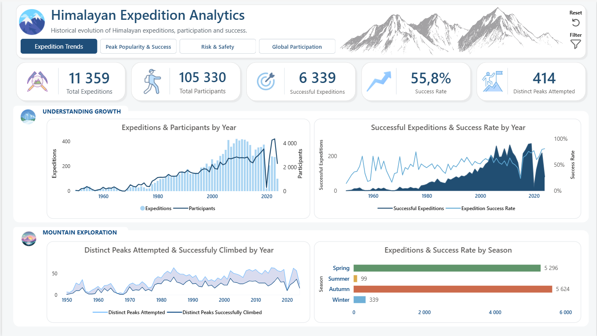
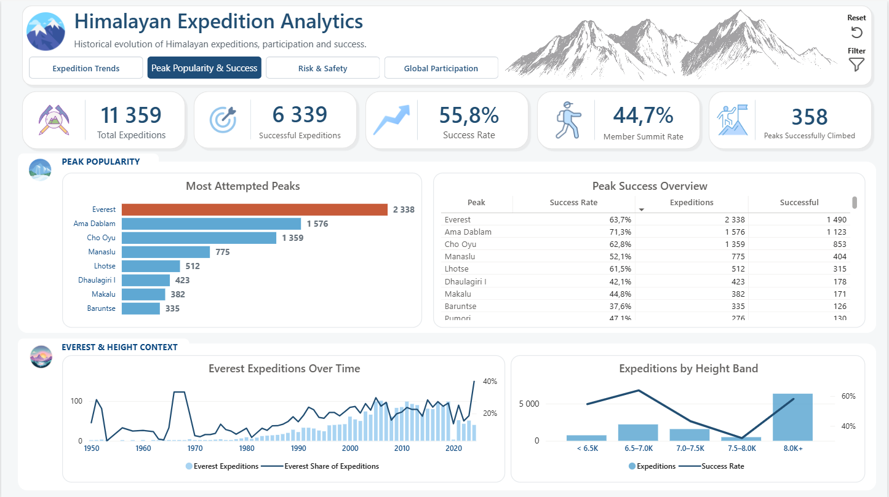
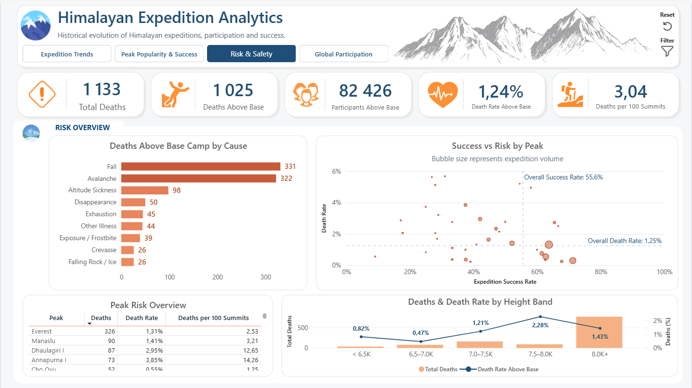
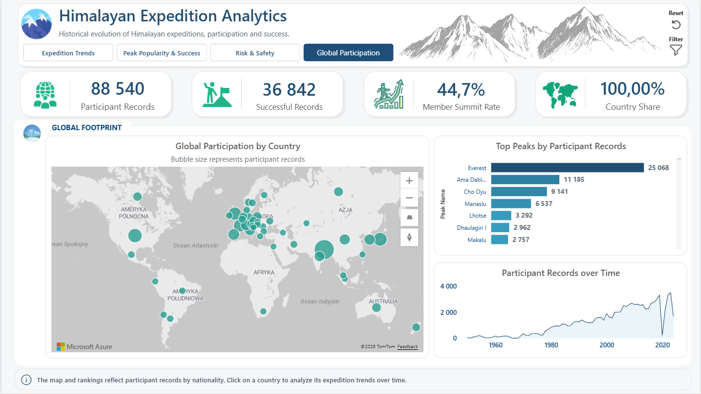

Himalayan Expeditions
Historical exploration of expedition activity, summit success, recorded risk, and global participation.

Project Goal
The project was created to analyze the historical development of Himalayan mountaineering, including expedition activity, peak popularity, summit success, recorded risk, and global participation. The interactive Power BI report covers expedition data from 1950 to June 2024, with earlier historical records available through the year filter.
Technologies & Tools Used
Power BI Desktop, Power Query, DAX, Data Modeling, Azure Maps, What-if Parameters, Bookmarks, Custom Tooltips
Step by Step:
- Imported and cleaned three source datasets: Peaks, Expeditions, and Members
- Corrected CSV parsing issues, assigned appropriate data types, standardized field names and selected columns relevant to the analysis
- Created a unique ExpeditionKey and resolved ambiguous expedition identifiers to build reliable table relationships
- Built a data model with three active one-to-many relationships:
- Years → Expeditions
- Peaks → Expeditions
- Expeditions → Members
- Performed data quality checks, including the exclusion of 89 participant records that could not be safely assigned to an expedition and the identification of four expeditions with inconsistent participant counts
- Defined analytical concepts and rules underlying the key measures, such as successful expedition, member summit rate, and death rate above Base Camp
- Created approximately 25 DAX measures covering expedition activity, participation, success, mortality, peak popularity, and country-level analysis
- Developed dynamic parameters for controlling the minimum number of expeditions required in peak-level comparisons
- Designed four interactive report pages:
- Expedition Trends
- Peak Popularity & Success
- Risk & Safety
- Global Participation
- Added expandable filter panels, page navigation, reset buttons, custom report tooltips, conditional formatting, and interactive map filtering
Final Dashboard Overview
The final report provides four analytical perspectives:
Expedition Trends - long-term changes in expedition and participant volume.

Peak Popularity & Success - peak rankings, summit success, Everest trends, and height bands.

Risk & Safety - recorded deaths, causes of death, relative risk, and success versus risk by peak.

Global Participation - country-level participation, summit performance, and historical trends.

Insights / Findings
- Expedition volume and participant volume peaked in different years.
The highest number of expeditions was recorded in 2009 with 420 expeditions and 2,865 participants. The highest participant volume occurred in 2023, with 4,379 participants across only 274 expeditions. Average reported expedition size increased from approximately 6.8 to 16.0 participants.
- Everest was the most frequently attempted peak.
Everest recorded 2,338 expeditions and represented 20.6% of all expedition activity. Ama Dablam ranked second with 1,576 expeditions.
- Ama Dablam combined popularity with strong expedition success.
Among peaks with at least 30 expeditions, Ama Dablam achieved the highest expedition success rate at 71.3%, followed by Himlung Himal at 67.8% and Kangchenjunga at 65.5%.
- Everest activity was strongly seasonal.
Everest represented approximately 38.7% of spring expeditions, compared with only 4.1% in autumn.
- The highest number of deaths did not indicate the highest relative risk.
Everest recorded the most deaths, but Annapurna I and Dhaulagiri I had substantially higher death rates relative to participants active above Base Camp and successful summiters.
- Falls and avalanches were the leading recorded causes of death.
Falls accounted for 331 recorded deaths above Base Camp, while avalanches accounted for 322.
- Nepal dominated global participation.
Nepal represented 20,704 participant records, equal to 23.4% of the total. Nepal also recorded 14,169 successful participant records and a 69.4% member summit rate.
Analytical Value
-
Supports historical analysis of changes in expedition activity and team size
-
Identifies peaks combining high popularity with strong expedition success
-
Separates absolute deaths from relative risk to prevent misleading comparisons
-
Demonstrates how minimum observation thresholds improve the reliability of success-rate rankings
-
Enables geographic exploration of participation and performance by citizenship
-
Provides an interactive foundation for comparing years, seasons, regions, height bands, peaks, and countries
Data Limitations
Data for 2024 ends in June and represents a partial year
Participant records represent person-expedition entries, not unique climbers
Detailed hired-personnel records may be incomplete
Records with missing, uncertain, or multiple citizenship values are not displayed on the map
The results identify patterns and relationships but do not establish their causes